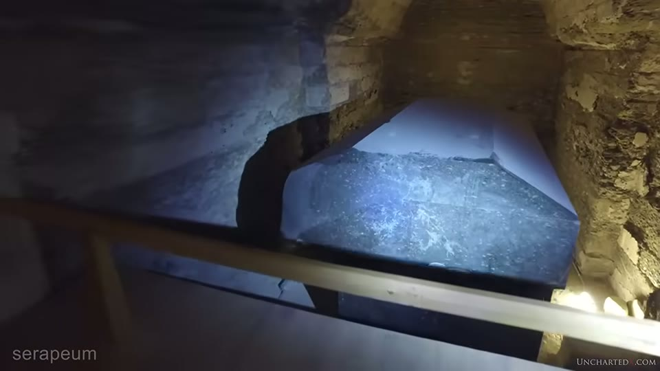
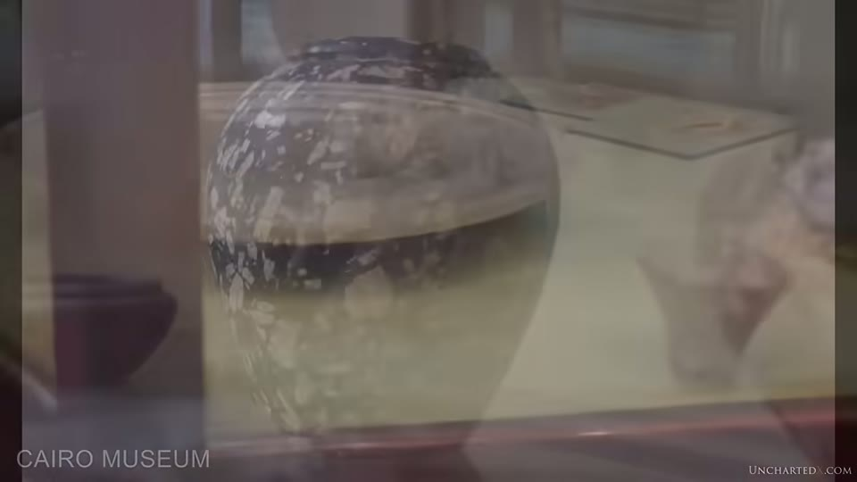
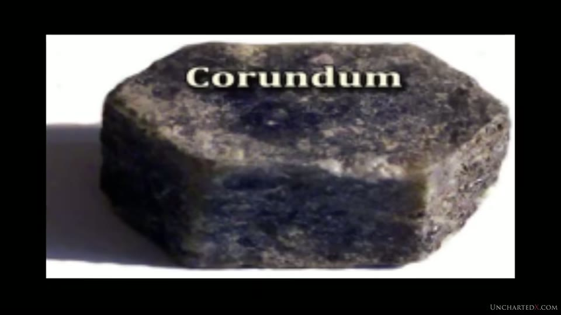
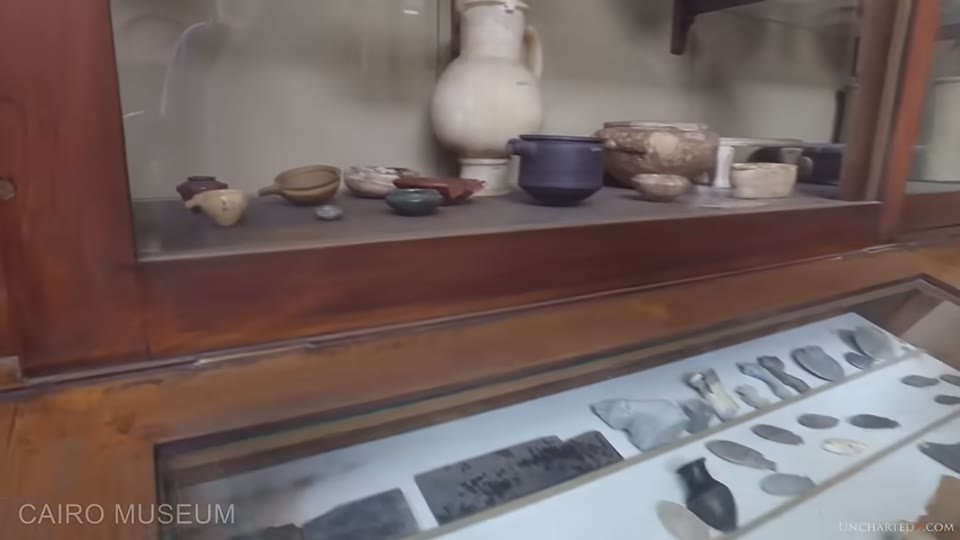
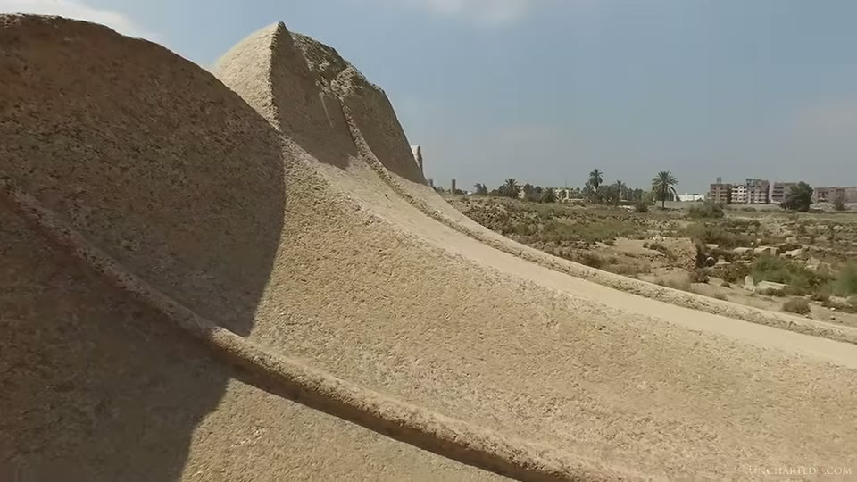

UnchartedX
Precision! - Evidence for Ancient High Technology, part 2
Ben · 61 min · watch on YouTube · summarised 2026-09-30
Part two of three, and the one Ben calls the most convincing category of evidence 00:31–01:10. It runs an hour and its structure is an argument followed by four classes of object: the Serapeum boxes, the small stone vases, the giant columns, and the Ramses statues. Part one, on machining and polishing, is held as the machining entry, and he recommends watching it first; part three, on quarrying and moving, is the logistics entry.
Almost every number in it comes from one of two sources — Flinders Petrie, writing in 1883 and 1884, and Christopher Dunn, a manufacturing engineer of forty years. The video is largely a presentation of their measurements, and it says so.
The argument before the objects
The first eight minutes are about precision as an idea 01:10–08:14, sourced to a book Ben names and credits: **Simon Winchester's *The Perfectionists: How Precision Engineers Created the Modern World***, which he says was recommended to him in an email discussing the Serapeum. He summarises Winchester's account of where modern precision came from — marine chronometers, boring cannon barrels so they neither explode nor shoot crooked, and steam pistons that had to seal well enough to do work.
Then the move the rest of the video depends on 05:37–06:45:
"We simply don't create precision manufacturing capability to this level for any other reason than function. We don't develop it for ceremonial purposes, nor do we develop it for artistic reasons."
With a qualification he supplies himself, and which cuts against him: once the capability exists it can be pointed at anything, "whether we are making artwork or machine parts — it's the process itself that provides the precision." He asks the viewer to hold that in mind, noting that "some of these precision ancient objects appear more functional than others."
He also names his one disagreement with the book 07:40–08:14: that precision did not begin in the eighteenth century but was restarted then, and rediscovered rather than invented.
And the reason he thinks nobody noticed sooner 18:48–19:33: it was not until our own civilisation had gone some way down the same path that we had the instruments to measure ancient precision, or the experience to see what making it would have taken. "This evidence has been sitting in front of humanity for thousands of years like some sort of coded message sent down through time, but it's one that we've only relatively recently developed the capability to read."
The Serapeum boxes
09:09–18:30. The site itself, the two-industries argument for it and the polishing stages are held as the Serapeum entry; what is added here is numbers. The measurements are Dunn's, taken with his own instruments on his own initiative, and the figures are specific:
- inside surfaces flat to within 0.0001 inches — one twentieth the width of a human hair, and the stated limit of his straightedge. Wherever he moved it over the interior walls, light did not pass underneath.
- using a precision square calibrated to 0.00005 inches, the inside faces are square and parallel to each other and square relative to the lid.
Ben's emphasis is on what that combination implies for the making: these are single-piece granite boxes, not parts bolted together, so "one single mistake anywhere would mean that you need to change the entire geometry of the box", in faces up to ten feet apart — and it is repeated across many boxes.
He reads a long passage from Dunn's article The Amazing Boxes of the Serapeum, sourced on screen to gizapower.com, which sets out the same geometric dependency and ends:
"Nobody does this kind of work unless there is a very high purpose for the artifact… The only other reason that such precision would be created in an object would be that the tools that are used to create it are so precise that they are incapable of producing anything less than precision. With either scenario we are looking at a higher civilization in prehistory than what is currently accepted."
The most useful admission in the section is about how little has been done 14:50–15:27. The Serapeum boxes are, to his knowledge, the only such boxes that have been measured at all; the work was done by Dunn privately; and it covered only a couple of the twenty-four. Of the many similar boxes elsewhere in Egypt he can find no evidence that any has been tested, "even by the relatively rudimentary testing that you can do with handheld precision straightedges, squares and corner radius dies." His proposals for what should be done are named: laser metrology, high-definition lidar scanning, hyperspectral imaging.

The object the tolerances are quoted for.
Two kinds of box 16:32–18:30. He argues that boxes in Egypt fall into two groups regardless of being labelled sarcophagi alike — precision-made ones with straight lines, sharp corners and polished faces, and clearly handmade ones still carrying chisel and hammer dressing marks — and that the crude ones tend to be later. He names the oldest box known, an eight-ton single piece of granite under mastaba 17 at Meidum, as belonging to the precise group. At Tanis the two types stand side by side.

That two very different qualities of work stand at one site.
The vases
19:33–30:20. Found "in the tens of thousands", associated with the first and second dynasties and the archaic and pre-dynastic periods — "which is a huge clue right there, as these periods are quite literally considered part of the Stone Age."
Five years after this video the same objects get a full treatment with modern instruments, held as the precision vases entry — structured-light scanning, provenance, and the museum work Ben asks for here.
Petrie's own description, read out from his 1884 article in the Journal of the Anthropological Institute of Great Britain and Ireland, supplies the figures:
"The finest examples of turning in hard stone are in the British Museum. A small highly polished narrow-necked vase in diorite — or rather in transparent quartz with veins of hornblende — has its neck only .05 inches thick… but the greatest triumph is a bowl of diorite, number 4716, translucent and full of minute flaws which must render it very brittle; yet this bowl, six inches diameter, is only one fortieth of an inch, or .024 inches, thick over its greatest part… no stouter than thin card."
Ben's additions to that are about materials and about handling. The list of stones is granite, diorite, schist, breccia, flint, conglomerate, quartz, basalt and obsidian, and he names one vase made of corundum, Mohs 9. His point about conglomerate stone is a working one: a cutting edge passing from soft matrix into hard brittle crystals meets material that "would typically shatter rather than cut cleanly", and yet the walls stay thin and the finish stays even.
He also flags the limit of his own claim about one of them 21:00–21:22: a jar so well balanced that it stands upright on a tiny base — "while I've not had the privilege of handling them directly in order to test this."

That some vessels are thin enough to pass light.

What appears on screen under the claim about a vase made of corundum.
The inheritance argument in this section is made from packaging rather than from stone 25:03–25:47. Some of these jars were used as canopic vessels; they were sealed with rough mud and clay lids, which are displayed in the museum beside them. If the dynastic Egyptians made the jars, he asks, why could they not afford stone lids for them?
He extends it to how the objects are shelved: some 40,000 vases found beneath the Step Pyramid of Djoser, whom he gives as the first pharaoh of the Fourth Dynasty; a lapis lazuli tube with a gold sheath displayed in the pre-dynastic section "next to bone needles, beads and basic pottery"; and a large granite jar of the archaic age carrying "very poor and badly aligned early forms of writing that barely scratch the surface" of it.

That a precision object is displayed among Neolithic material.

That the stone vessels and the tools said to have made them are shelved together.
Petrie on the lathe 27:07–29:31 is the technical core, and it is the second half of the observation that produced the tube drills entry: from the drill marks Petrie deduced that the ancients rotated the tool, and from the vases that they also rotated the work. Both quotations are read out. From The Pyramids and Temples of Gizeh: that the principle of rotating the tool was abandoned for smaller objects in favour of rotating the work, that "the lathe appears to have been as familiar an instrument in the 4th dynasty as it is in modern workshops", and that one piece found at Giza, number 14, shows true turning rather than grinding because the bowl was knocked off its centring, recentred imperfectly, and finished with two surfaces meeting in a cusp — "such an appearance could not be produced by any grinding or rubbing process." From the 1884 article: a diorite bowl fragment turned as a segment of a sphere with a radius of 3.94 inches, the tool's centre of play then shifted 0.5 inches higher and 0.7 inches out of the lathe axis and a fresh arc struck, leaving a raised lip.
Set against that 29:32–30:20: that on the mainstream account the Old Kingdom Egyptians did not have the wheel, on the grounds that it does not appear in their writings or diagrams, and did not command it until the Second Intermediate Period and the arrival of Hyksos chariots.
The schist disc 30:20–31:50 closes the section — the object from the mastaba of Prince Sabu of the First Dynasty, found among flint knives and copper tools, broken and reassembled by museum staff. Ben explicitly declines the speculation about what it was for: "I'm less interested in the speculation about its purpose than I am with the technology that's required to make this piece." What he claims for it is that it is not lathe work — compound curved surfaces carved into hard stone and then repeated accurately for each of its three wings.

The First Dynasty object whose compound curves the presenter says are not lathe work.
The columns
31:50–34:25. A remnant of a flared pink granite column from the Old Kingdom temple at Bubastis. His account of the making is a sequence rather than a description: the original block had to be wider than the widest part of the flare, then worked down to the shaft diameter on a perfectly aligned centreline, then shaped and finished symmetrically. Broken as it is, he puts the original at more than 40 or 50 feet, over 15 metres, and points to the standing column at Alexandria as an example of one much larger.

A single-piece flared granite column, and the repetition claimed for it.
The second dimension he draws from them is repetition 34:29–35:24: dozens of these single-piece flared columns are known from the oldest sites — Bubastis, Tanis, Saqqara, Giza — and those from one installation are typically identical. Three years later, in the Karnak and Luxor entry, he reads the stacked sandstone columns of the hypostyle halls as imitations of these. "These seem to have been stamped out in ancient times as if they were made in some sort of giant factory."
A guest speaker, identified in the narration as the master stonemason Yousef Awyan, makes the same point from a mason's side over this footage, asking where you find sixteen pieces of stone each over five and a half metres from which sixteen matching pillars can be cut, each with its crown in the same solid piece.
The statues, and the figures on the page
35:24–52:00. Scale first: the Ramses statues at Luxor estimated at up to 400 tons, several of them identical; a syenite statue at the Ramesseum over 60 feet and estimated at more than 1,000 tons; and the Tanis remnants implying a height over 90 feet. Also the Tanis toe — a single carved granite toe from which he asks the viewer to reconstruct the statue. He notes that these statues are labelled as Ramses II "purely because he has his name carved into them", and that Ozymandias is the Greek name that gave Shelley his sonnet.
The analysis is Dunn's, made from photographs rather than from instruments on the stone, and Ben says so: "Chris Dunn has been working from extensive and well-aligned photographs of the faces." The claims, as presented:
- the crowns are the product of compound radial curves and spherical geometry in three dimensions, repeated exactly from crown to crown, with no flat surfaces on them
- symmetry demonstrated by mirroring a photograph and laying it transparently over the original on the centre line
- the faces cut to the same plan across statues, with the same profile ratio between eyes and mouth, and with Fibonacci, Pythagorean triangles, the golden ratio and the flower of life reflected in the geometry
The plates are shown on screen and their printed captions carry more than the narration reads.

How the symmetry of the crowns is demonstrated, and by whom.
The crown demonstration is Figure 1.10 — "The second Hedjet original image and a reverse transparency on center. Note the symmetry between both sides." The face measurement is Figure 3.9 — "Measuring the face of the Ramesseum Ramses" — and the plate carries eight pairs of numbers straddling a centre line, each pair identical: 14.05, 14.05, 13.76, 13.49, 12.94, 12.43, 11.76, 10.91, left and right. No unit is printed on the figure and none is spoken.
And the comparison across statues is Figure 3.4, whose caption names the four statues and, unprompted, the photographic conditions: "(1) Ramses in the open-air museum at Memphis; (2) Ramses bust from the Ramesseum; (3) Ramses bust outside the Temple of Luxor pylon, taken with the camera facing west; (4) Seated Ramses in the Ramses Hall in the Temple of Luxor, taken with a telephoto lens and with the camera facing east, from the Sharia al-Corniche outside the temple." The four are compared with dashed lines drawn across all of them. The narration describes the result as a consistent profile ratio across multiple statues and does not mention the conditions the caption states.


The measurements behind the symmetry claim, and the conditions the photographs were taken under.
Two further quotations are read from Lost Technologies of Ancient Egypt: Dunn on the crown — "the pieces could not have been created without the aid of some kind of mechanical device that guided the tool along a prescribed contour, neither was this mechanical device a simple machine", and that the tools of fifty years ago "would severely tax craftsmen skilled in manufacturing"; and Dunn on the faces, describing them in terms of NURBS, the non-uniform rational b-splines used to design aircraft wings and turbine blades, ending on the line that the techniques the Egyptians are supposed to have used "would not produce the precision of a Model T Ford, let alone a Lexus or a Porsche."
A letter is read in full 50:39–51:59 from the sculptor Mike Leckie to Dunn: that carving the Ramses granite would require upgrading his normal tools, that "my modern diamond blades and grinding points would be worn out before the head was started", and that "modern man with all his modern tools would be challenged to finish one Rameses in a generous timeline — creating four of them, as large as they are, all the same, seems almost impossible."
Before that, Ben sets the statues apart from later sculpture explicitly 49:25–50:31, and answers the Michelangelo comparison rather than ignoring it: he has seen the David, calls it "a profoundly beautiful achievement", and says it is a different thing — "David is utterly and emotionally human in its lack of symmetry, whereas Ramses appears to be so inhuman, or perhaps beyond human, because of its symmetry."
Where he lands
52:00–58:20. The conclusion is put as a fork rather than an assertion, and he marks the limit of what the objects prove:
"An analysis of these objects isn't proof in and of itself for a lost civilization that predates the dynastic Egyptians, but it is pretty solid proof that they required forms of high technology to manufacture, regardless of whether or not we found any tools like that."
Then the fork: either we are wrong about the capabilities and tools of the early dynastic Egyptians, or we are wrong in saying they created these objects at all. His charge is that the mainstream position holds both — that the Egyptians made everything, and that they did it with Bronze Age tools.
Yousef Awyan is given the last substantive word, and what he proposes is not a separate people but a longer clock: the statues do carry tubular drill and circular saw marks, "that means we cannot separate the pyramid builders from them" — so instead, extend the timeline with more intermediate periods, more rises and falls, a cataclysm, and inheritance each time.
Ben's own closing line is a concession about the whole enterprise: "All of history is ultimately conjecture. At some point we are always faced with the challenge of assembling a story from a very limited set of incomplete evidence."
What you can check yourself
- Petrie's British Museum bowl is numbered. Number 4716, six inches across, quoted at one fortieth of an inch thick. The 1884 Journal of the Anthropological Institute article and The Pyramids and Temples of Gizeh are both out of copyright and freely readable, and both figures quoted here are in them.
- Petrie's Giza bowl number 14 and the cusp he describes are a specific claim about a specific object.
- Dunn's figures are published with numbers on them. Figure 3.9 carries eight measurement pairs; whether a unit is given anywhere in the book is a matter of opening it.
- Figure 3.4's caption states its own photographic conditions — which camera direction, which lens — and those can be weighed against what the comparison is asked to show.
- The mirroring test needs no equipment. Photograph a face-on statue, flip the image, overlay it at half opacity, and look. Anyone can run it, on these statues or on others.
- The two kinds of box at Tanis stand in the open air a few metres apart.
- The clay lids beside the stone jars are on display in the Egyptian Museum, as is the schist disc and the pre-dynastic case.
- The dynasty attributions — Djoser and the Step Pyramid, mastaba 17 at Meidum, the mastaba of Sabu — are all published and can be looked up against the dates given here.
- The wheel. Whether it appears in Old Kingdom writings or diagrams, and when chariots arrive, are questions with a documented mainstream answer.
What the video does not settle
- No measurement is taken on camera, in an hour about measurement. Dunn's straightedge and square are described and their tolerances quoted; neither instrument appears in use on screen. The video presents measurements, it does not make them.
- The Serapeum figures come from two boxes out of twenty-four, by one person, on his own initiative — which the video states plainly and treats as an indictment rather than a limit.
- The statue analysis is photogrammetry by eye. It is derived from photographs, and the book's own caption for the four-statue comparison records that they were taken facing different directions, one with a telephoto lens from outside the temple.
- Figure 3.9's numbers carry no unit on the plate, and the narration does not supply one.
- The corundum vase is not shown. What appears under the claim is a captioned photograph of a corundum mineral specimen; the vase itself, its museum and its number are not given.
- The precision-implies-function argument is undercut in the video itself. Ben states that once a precise process exists it can be applied to anything, including artwork, and asks the viewer to hold that in mind. The section on the schist disc then sets aside the question of what the object was for.
- Nothing here is dated independently. That the precise objects are older than the crude ones is argued from relative capability and from the periods the objects are already assigned to.
- The count of two box types is not quantified. No survey, tally or catalogue is offered for the claim that crude boxes tend to be later.
- Most of the museum footage is shot through glass, at an angle, with reflections across it. Several of the objects the argument names — the thin walls, the balanced base, the finish — are described from behind a display case.
Names and figures heard rather than read
This is a 2020 upload with a punctuated but unreliable caption track. Twelve reconstructions:
| written here | as the captions give it |
|---|---|
| the Serapeum | "the Serra pium", "the syrup in", "this era p.m.", "the Serra p.m." |
| Yousef Awyan | "use of Iowan", "also use of Iowan" |
| Bubastis, temple of Bastet | "the temple of Bastet" (given), "tennis" for Tanis |
| Tanis | "tennis", "tennis itself" |
| Meidum | "my doom" |
| the Hedjet and the Pschent | "the head Jets and the percents" |
| Sabu | "prints Sabu" |
| Christopher Dunn | "Chris Dunne", "done" |
| syenite | "cyanide", "syenite" |
| Ramses II | "ramses ii", "Ramsey", "Ramseys" |
| Ozymandias | "Ozymandias" (given) |
| Simon Winchester | "Simon Winchester" (given) |
Three things were read off the screen rather than reconstructed. All three Dunn figure numbers and their full printed captions — 1.10, 3.4 and 3.9 — are legible in the frames, as are the eight measurement pairs on 3.9. The book is identified by its cover in the corner of each plate.
Two names are not recovered. The person who recommended Winchester's book is given as "Philip Adams" and is not identified further. And the museum-card text beside several of the vases is not legible in any frame, so none of the vessels shown is identified by accession number.
One figure is recorded as spoken. Djoser is given as "the first Pharaoh of the Fourth Dynasty of the Old Kingdom"; the attribution of the Step Pyramid is published and can be checked against that.